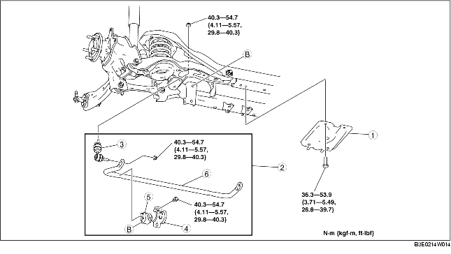

1. Remove in the order indicated in the table.
2. Install in the reverse order of removal.

.
|
1
|
Rear crossmember bracket
|
|
2
|
Rear stabilizer component
|
|
3
|
Stabilizer control link
|
|
4
|
Stabilizer bracket
|
|
5
|
Stabilizer bushing
|
|
6
|
Rear stabilizer
|
1. Secure the stabilizer bracket flange using a vise.
2. Remove the stabilizer bracket.
1. Place the stabilizer bushing so that the projection is facing toward the left side of the vehicle.
2. Widen the stabilizer bushing opening 16-26 mm {0.7-1.0 in} and install the bushing to the rear stabilizer as shown in the figure.
1. Apply grease to the stabilizer bushing.
2. Install the stabilizer bracket using a vise.
1. Tighten the bolts in order indicated in the figure.